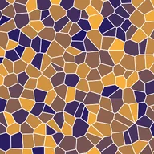

Voronoi-cellen

Vult de ondoorzichtige delen van de laag met een patroon van cellen rond willekeurig geplaatste punten.
Instellingen
| Instelling | Type | Bereik | Standaard |
|---|---|---|---|
| Schaal | Getal | 0.01 tot 100 | 1 |
| Fase | Getal | -99 tot 99 | 0 |
| Lijndikte | Getal | 0 tot 1 | 0 |
| Kleur 1 | Kleur | – | #FFFFFF |
| Kleur 2 | Kleur | – | #000000 |
| Lijnkleur | Kleur | – | #0000FF |
| Seed | Getal | 0 tot 5 | 0 |